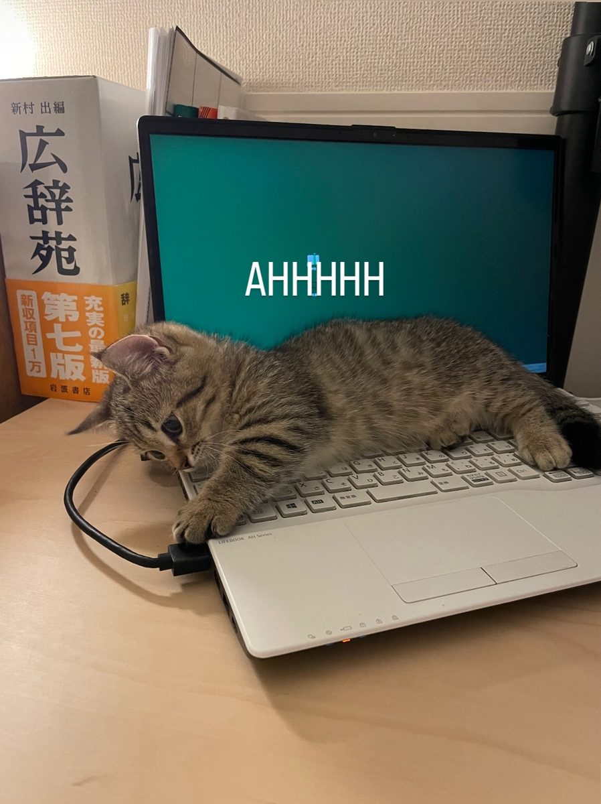
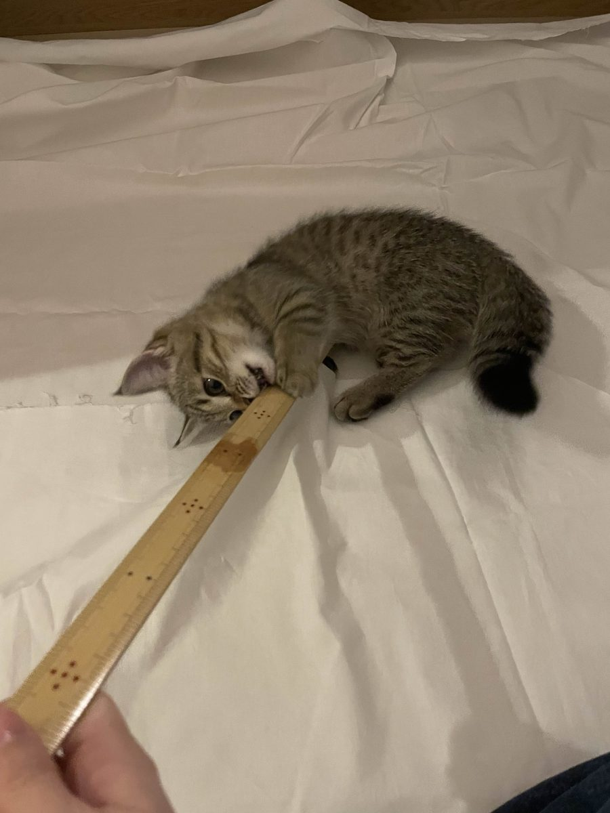

毎回このコラムにはヘッダー画像を設定しているんですが、今回は画像いっぱいになりました。
２週間ほど前に、子猫が新たな家のメンバーになりました。生後３ヶ月です。本当に元気。この子を迎えるにあたり、９月末に予定していた小説新人賞の応募は１２月に持ち越しと決めました。

本来の画像はこんな感じです。この前ワクチンを打ちに行って、１．２ｋｇでした。かわいいね。
話を戻します。猫の話です。
これまで猫を５匹以上飼ってきたのですが、全員性格や好みが違います。細長い棒を持つとじゃれる性質があるので、鉛筆やペンなどはおちおち使えません。裁縫も難しいです。布に包まるのも大好きな様子。

こういうのは運動量の多い子猫や若い猫のほうが多くて、その分たいへんなことも多いですね。でも今しか味わえない楽しみということで、仕事をセーブして楽しんでいます。寝ている時間にこっそり仕事、こういうのもいいもんだ。